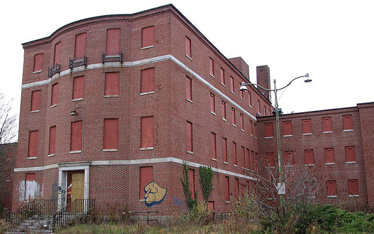
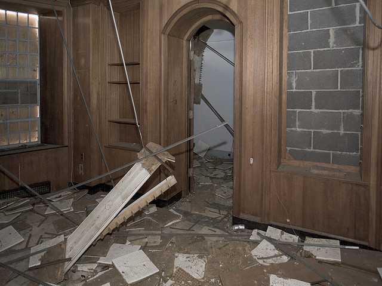
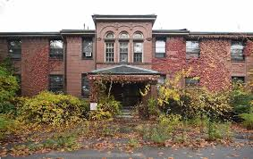

You might not know, but here in Waltham (Belmont and Lexington too I guess) lies in an eerie mental institution known as the Metropolitan State Hospital. While it is officially described as a "institution for the mentally ill", what they really mean is that this is a mental aslyum.

This particular place is quite famous for the murder of Anne Marie Davee in the late 70s. According to sources, the investigation was mishandled greatly, with parts of her body being found only after the case was closed, leading to some form of justice. I've heard from many that the place is haunted, perhaps from the rage and despair of mistreated patients. I can only hope their souls have found some form of peace by now.

This is not the only one nearby. Just over a mile southeast is the Fernald Development Center (solely in Waltham this time). Infamous for its founder's views on eugenics and experimentation on children regarding exposure to radioactive material, it only closed in 2014 despite its long run of child exploitation and mistreatment.

For any urban explorers out there, these two are solid options. Just remember to be respectful and weary of any ghosts and especially police presences See you next time!.